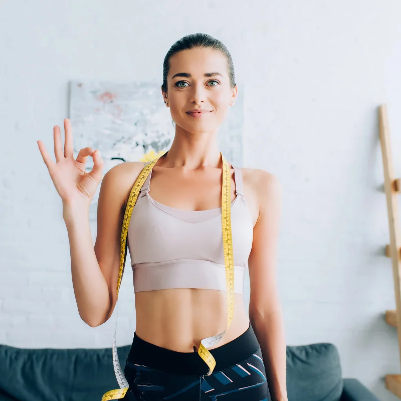

Hubnutí
Hubnutí chůzí: kolik kroků denně potřebujete?
Chůze je nejpřístupnější způsob hubnutí. Zjistěte, kolik kroků denně stačí.
Číst článek →Články o hubnutí, výživě, sportu, metabolismu a BMI. Praktické rady a návody pro zdravý životní styl.
Chůze je nejpřístupnější způsob hubnutí. Zjistěte, kolik kroků denně stačí.
Číst článek →
Po čtyřicítce se hubnutí mění. Zjistěte, co se děje s metabolismem.
Číst článek →
Bezpečné hubnutí po padesátce. Rady pro zachování zdraví a svalové hmoty.
Číst článek →
Jak bezpečně zhubnout po porodu bez extrémních diet a s ohledem na kojení.
Číst článek →
Kompletní návod na počítání kalorií. Jak spočítat denní příjem a vytvořit deficit.
Číst článek →
Který sport spaluje nejvíce kalorií? Porovnání běhu, plavání, HIIT a dalších.
Číst článek →
Jaká tepová frekvence je ideální pro spalování tuků? Výpočet a zóny.
Číst článek →
Co je metabolismus, jak funguje a jak ovlivňuje vaši hmotnost.
Číst článek →
Výpočet bazálního metabolismu, vzorce a kalkulačka pro muže i ženy.
Číst článek →
BMI tabulka, stupně obezity a jejich zdravotní rizika.
Číst článek →Praktický průvodce, jak snížit BMI zdravým způsobem. Strava, cvičení, spánek.
Číst článek →Kompletní průvodce BMI u dětí. Percentilové grafy a hodnocení.
Číst článek →
Porovnání BMI s WHR, kožními řasami, DEXA a dalšími metodami.
Číst článek →